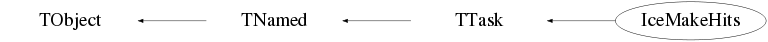

class IceMakeHits: public TTask
Class IceMakeHits TTask derived class to perform hit extraction from waveforms. In case an event has been rejected by an NcEventSelector (based) processor, this task (and its sub-tasks) is not executed. The code in this processor is based on the algorithms as developed by Nick van Eijndhoven and Garmt de Vries-Uiterweerd (Utrecht University, The Netherlands). The parameters have been tuned for IceCube waveforms by Dennis Diederix (IIHE, Brussels). Further tuning and automatic progression of parameters introduced by Nick van Eijndhoven (IIHE, Brussels). Procedure applied for Amanda TWR data : 1) The waveform is fed to a TSpectrum object, and the peak locations are determined with the TSpectrum::Search() function. 2) The waveform is divided into regions corresponding to the peaks found by TSpectrum. The region boundary between two peaks is at the location of the minimum between the two peaks. 3) For each region the "effective baseline" (used in e.g. the evaluation of the leading edge value) is determined as : AMANDA : effective baseline = fBasefracXXX * value at lower region boundary IceCube : effective baseline = previous baseline + fBasefracXXX * (value at lower region boundary - previous baseline). In case the "value at lower region boundary" is below the overall baseline, the pulses are obviously well separated and the effective baseline is set to the overall baseline again. This takes into account the effect from the previous pulse. For the first pulse, the effective baseline is equal to the overall baseline. 4) For each region, the point of steepest rise between the lower region boundary and the peak location is determined. The tangent at this point is extrapolated to the effective baseline. The point of intersection yields the leading edge. 5) For each region the range of charge integration is determined as : - Start of integration at the lower region boundary or at the leading edge, whichever comes last. - End of integration at the upper region boundary or at the point where the signal drops below the overall baseline, whichever comes first. 6) For each region the integrated charge is determined as : Sum over bins in integration range of (value in bin - overall baseline). Note : For IceCube the effective baseline is used in the charge integration. 7) For each pulse the quality is evaluated by requiring that : peak location - lower region boundary > lower region boundary - leading edge. For a too shallow steepest rise, the leading edge value is unreliable, in which case the pulse is merged with the previous pulse. 8) Each pulse is checked for saturation and discarded if necessary. Note : For IceCube only the RAW waveforms are checked for saturation. 9) TSpectrum needs a minimum number of bins for its Search function, otherwise the clipping window is too large, which causes an error. If a waveform does not contain enough bins, the following alternative approach is used : - A loop over all bins is performed. - As soon as the signal exceeds a given threshold, a pulse is started. - The pulse ends when the signal drops below the threshold again. - While looping, the charge is integrated for each pulse. The defaults of the various parameters can be changed by the corresponding Set memberfunctions. Procedure applied for IceCube waveform (ATWD and/or FADC) data : The procedure for ATWD/FADC data is essentially the same as for TWR data. However, an extension for IceCube is that the baseline of the waveform is determined automatically from the waveform itself via the median of all the signals below 20% of the maximum signal w.r.t. a first approximation of the baseline. The latter is obtained by just taking the median of all the signals in the waveform. This baseline value is also stored as a slot value in the corresponding DOM device. All relevant parameters can be set independently. Information about the actual parameter settings can be found in the event structure itself via the device named "IceMakeHits". --- Author: Nick van Eijndhoven and Garmt de Vries-Uiterweerd 15-jan-2007 Utrecht University - Modified: NvE $Date: 2012-02-07 11:05:54 +0100 (Tue, 07 Feb 2012) $ NCFS
Function Members (Methods)
public:
| IceMakeHits(const IceMakeHits&) | |
| IceMakeHits(const char* name = "IceMakeHits", const char* title = "Hit extraction") | |
| virtual | ~IceMakeHits() |
| virtual void | TTask::Abort()MENU |
| void | TObject::AbstractMethod(const char* method) const |
| virtual void | TTask::Add(TTask* task) |
| virtual void | TObject::AppendPad(Option_t* option = "") |
| virtual void | TTask::Browse(TBrowser* b) |
| static TClass* | Class() |
| virtual const char* | TObject::ClassName() const |
| virtual void | TTask::CleanTasks() |
| virtual void | TTask::Clear(Option_t* option = "") |
| virtual TObject* | TNamed::Clone(const char* newname = "") const |
| virtual Int_t | TNamed::Compare(const TObject* obj) const |
| virtual void | TTask::Continue()MENU |
| virtual void | TNamed::Copy(TObject& named) const |
| virtual void | TObject::Delete(Option_t* option = "")MENU |
| virtual Int_t | TObject::DistancetoPrimitive(Int_t px, Int_t py) |
| virtual void | TObject::Draw(Option_t* option = "") |
| virtual void | TObject::DrawClass() constMENU |
| virtual TObject* | TObject::DrawClone(Option_t* option = "") constMENU |
| virtual void | TObject::Dump() constMENU |
| virtual void | TObject::Error(const char* method, const char* msgfmt) const |
| virtual void | Exec(Option_t* opt) |
| virtual void | TObject::Execute(const char* method, const char* params, Int_t* error = 0) |
| virtual void | TObject::Execute(TMethod* method, TObjArray* params, Int_t* error = 0) |
| virtual void | TObject::ExecuteEvent(Int_t event, Int_t px, Int_t py) |
| virtual void | TTask::ExecuteTask(Option_t* option = "0")MENU |
| virtual void | TTask::ExecuteTasks(Option_t* option) |
| virtual void | TObject::Fatal(const char* method, const char* msgfmt) const |
| virtual void | TNamed::FillBuffer(char*& buffer) |
| virtual TObject* | TObject::FindObject(const char* name) const |
| virtual TObject* | TObject::FindObject(const TObject* obj) const |
| Int_t | TTask::GetBreakin() const |
| Int_t | TTask::GetBreakout() const |
| virtual Option_t* | TObject::GetDrawOption() const |
| static Long_t | TObject::GetDtorOnly() |
| virtual const char* | TObject::GetIconName() const |
| TList* | TTask::GetListOfTasks() const |
| virtual const char* | TNamed::GetName() const |
| virtual char* | TObject::GetObjectInfo(Int_t px, Int_t py) const |
| static Bool_t | TObject::GetObjectStat() |
| virtual Option_t* | TObject::GetOption() const |
| virtual const char* | TNamed::GetTitle() const |
| virtual UInt_t | TObject::GetUniqueID() const |
| virtual Bool_t | TObject::HandleTimer(TTimer* timer) |
| virtual ULong_t | TNamed::Hash() const |
| virtual void | TObject::Info(const char* method, const char* msgfmt) const |
| virtual Bool_t | TObject::InheritsFrom(const char* classname) const |
| virtual Bool_t | TObject::InheritsFrom(const TClass* cl) const |
| virtual void | TObject::Inspect() constMENU |
| void | TObject::InvertBit(UInt_t f) |
| virtual TClass* | IsA() const |
| Bool_t | TTask::IsActive() const |
| virtual Bool_t | TObject::IsEqual(const TObject* obj) const |
| virtual Bool_t | TTask::IsFolder() const |
| Bool_t | TObject::IsOnHeap() const |
| virtual Bool_t | TNamed::IsSortable() const |
| Bool_t | TObject::IsZombie() const |
| virtual void | TTask::ls(Option_t* option = "*") constMENU |
| void | TObject::MayNotUse(const char* method) const |
| virtual Bool_t | TObject::Notify() |
| void | TObject::Obsolete(const char* method, const char* asOfVers, const char* removedFromVers) const |
| static void | TObject::operator delete(void* ptr) |
| static void | TObject::operator delete(void* ptr, void* vp) |
| static void | TObject::operator delete[](void* ptr) |
| static void | TObject::operator delete[](void* ptr, void* vp) |
| void* | TObject::operator new(size_t sz) |
| void* | TObject::operator new(size_t sz, void* vp) |
| void* | TObject::operator new[](size_t sz) |
| void* | TObject::operator new[](size_t sz, void* vp) |
| IceMakeHits& | operator=(const IceMakeHits&) |
| virtual void | TObject::Paint(Option_t* option = "") |
| virtual void | TObject::Pop() |
| virtual void | TNamed::Print(Option_t* option = "") const |
| void | PrintWaveformNamesI() const |
| virtual Int_t | TObject::Read(const char* name) |
| virtual void | TObject::RecursiveRemove(TObject* obj) |
| void | TObject::ResetBit(UInt_t f) |
| virtual void | TObject::SaveAs(const char* filename = "", Option_t* option = "") constMENU |
| virtual void | TObject::SavePrimitive(ostream& out, Option_t* option = "") |
| void | TTask::SetActive(Bool_t active = kTRUE)TOGGLE |
| void | SetBasefracA(Float_t val) |
| void | SetBasefracI(Float_t val) |
| void | TObject::SetBit(UInt_t f) |
| void | TObject::SetBit(UInt_t f, Bool_t set) |
| void | TTask::SetBreakin(Int_t breakin = 1)TOGGLE |
| void | TTask::SetBreakout(Int_t breakout = 1)TOGGLE |
| virtual void | TObject::SetDrawOption(Option_t* option = "")MENU |
| static void | TObject::SetDtorOnly(void* obj) |
| void | SetMaxPeaksA(Int_t val) |
| void | SetMaxPeaksI(Int_t val) |
| void | SetMinPulseHeightA(Float_t val) |
| void | SetMinPulseHeightI(Float_t val) |
| virtual void | TNamed::SetName(const char* name)MENU |
| virtual void | TNamed::SetNameTitle(const char* name, const char* title) |
| static void | TObject::SetObjectStat(Bool_t stat) |
| void | SetPeakAcceptanceLevelI(Float_t val) |
| void | SetSigmaA(Float_t val) |
| void | SetSigmaI(Float_t val) |
| void | SetThresholdA(Float_t val) |
| void | SetThresholdI(Float_t val) |
| virtual void | TNamed::SetTitle(const char* title = "")MENU |
| virtual void | TObject::SetUniqueID(UInt_t uid) |
| void | SetWaveformNameI(const char* name) |
| virtual void | ShowMembers(TMemberInspector&) |
| virtual Int_t | TNamed::Sizeof() const |
| virtual void | Streamer(TBuffer&) |
| void | StreamerNVirtual(TBuffer& ClassDef_StreamerNVirtual_b) |
| virtual void | TObject::SysError(const char* method, const char* msgfmt) const |
| Bool_t | TObject::TestBit(UInt_t f) const |
| Int_t | TObject::TestBits(UInt_t f) const |
| virtual void | TObject::UseCurrentStyle() |
| void | UseWaveformNameI(TString name) |
| virtual void | TObject::Warning(const char* method, const char* msgfmt) const |
| virtual Int_t | TObject::Write(const char* name = 0, Int_t option = 0, Int_t bufsize = 0) |
| virtual Int_t | TObject::Write(const char* name = 0, Int_t option = 0, Int_t bufsize = 0) const |
protected:
| void | Amanda() |
| virtual void | TObject::DoError(int level, const char* location, const char* fmt, va_list va) const |
| void | IceCube() |
| void | TObject::MakeZombie() |
Data Members
public:
| enum TObject::EStatusBits { | kCanDelete | |
| kMustCleanup | ||
| kObjInCanvas | ||
| kIsReferenced | ||
| kHasUUID | ||
| kCannotPick | ||
| kNoContextMenu | ||
| kInvalidObject | ||
| }; | ||
| enum TObject::[unnamed] { | kIsOnHeap | |
| kNotDeleted | ||
| kZombie | ||
| kBitMask | ||
| kSingleKey | ||
| kOverwrite | ||
| kWriteDelete | ||
| }; |
protected:
| Bool_t | TTask::fActive | true if task is active |
| Float_t | fBasefracA | The fractional baseline update for Amanda TWR extraction |
| Float_t | fBasefracI | The fractional baseline update for IceCube waveform hit extraction |
| Int_t | TTask::fBreakin | =1 if a break point set at task extry |
| Int_t | TTask::fBreakout | =1 if a break point set at task exit |
| IceEvent* | fEvt | Pointer to the current event structure |
| Bool_t | TTask::fHasExecuted | True if task has executed |
| Int_t | fMaxPeaksA | The maximum number of peaks in a waveform in Amanda TWR extraction |
| Int_t | fMaxPeaksI | The maximum number of peaks in a waveform in IceCube hit extraction |
| Float_t | fMinPulseHeightA | The minimum pulse height for narrow pulses in Amanda TWR extraction |
| Float_t | fMinPulseHeightI | The minimum pulse height for narrow pulses in IceCube hit extraction |
| TString | TNamed::fName | object identifier |
| TString | TTask::fOption | Option specified in ExecuteTask |
| Float_t | fPeakAcceptanceLevelI | The minimum height of a peak above the baseline, in terms of baseline spread, in IceCube hit extraction |
| Float_t | fSigmaA | The width of the clipping window to be used by TSpectrum::Search() in Amanda TWR extraction |
| Float_t | fSigmaI | The width of the clipping window to be used by TSpectrum::Search() in IceCube hit extraction |
| TList* | TTask::fTasks | List of Tasks |
| Float_t | fThresholdA | The threshold to be used in analysis of narrow pulses in Amanda TWR extraction |
| Float_t | fThresholdI | The threshold to be used in analysis of narrow pulses in IceCube hit extraction |
| TString | TNamed::fTitle | object title |
| TObjArray* | fUseNamesI | The IceCube waveform names to be analysed |
| static TTask* | TTask::fgBeginTask | pointer to task initiator |
| static TTask* | TTask::fgBreakPoint | pointer to current break point |
Class Charts
{kind=link}
{kind=link}
{kind=link}
{kind=link}

Function documentation
IceMakeHits(const char* name = "IceMakeHits", const char* title = "Hit extraction")
Default constructor.
void SetBasefracA(Float_t val)
Set baseline fractional update for Amanda TWR extraction. The default as set in the constructor of this class is 0.5.
void SetSigmaA(Float_t val)
Set clipping window width for Amanda TWR extraction. The default as set in the constructor of this class is 1.5.
void SetMaxPeaksA(Int_t val)
Set maximum number of peaks in a waveform for Amanda TWR extraction. The default as set in the constructor of this class is 10.
void SetMinPulseHeightA(Float_t val)
Set minimum required pulse height for Amanda TWR extraction. This is used only for narrow pulses that cannot be handled with TSpectrum. The default as set in the constructor of this class is 50.
void SetThresholdA(Float_t val)
Set threshold for use in analysis of narrow pulses for Amanda TWR extraction. A peak is assumed to start when the signal rises above threshold*maxval, where maxval is the maximum value found in the waveform. The default as set in the constructor of this class is 0.2.
void SetBasefracI(Float_t val)
Set baseline fractional update for IceCube waveform hit extraction. The default as set in the constructor of this class is 0.5.
void SetSigmaI(Float_t val)
Set clipping window width for IceCube waveform hit extraction. The default as set in the constructor of this class is 2.
void SetMaxPeaksI(Int_t val)
Set maximum number of peaks in a waveform for IceCube hit extraction. The default as set in the constructor of this class is 10.
void SetPeakAcceptanceLevelI(Float_t val)
Set the IceCube minimum height of a peak above the baseline, in terms of baseline spread. The default as set in the constructor of this class is 5.
void SetMinPulseHeightI(Float_t val)
Set minimum required pulse height for IceCube waveform hit extraction. This is used only for narrow pulses that cannot be handled with TSpectrum. The default as set in the constructor of this class is 0.
void SetThresholdI(Float_t val)
Set threshold for use in analysis of narrow pulses for IceCube waveform hit extraction. A peak is assumed to start when the signal rises above threshold*maxval, where maxval is the maximum value found in the waveform. The default as set in the constructor of this class is 0.2.
void SetWaveformNameI(const char* name)
Set the name of a specific IceCube waveform to be analysed. Notes : 1) Invokation of this memberfunction allows to only specify 1 single waveform name (pattern). Previously specified name patterns will be overwritten. 2) This memberfunction is kept for backward compatibility. You are advised to use UseWaveformNameI() instead for more flexibility. 3) The search for the corresponding waveform will be performed on basis of a pattern name matching, so the functionality is like searching with "wildcards". However, the pattern needs to match exactly, i.e. the search is case sensitive.
void UseWaveformNameI(TString name)
Specification of the name(s) of the IceCube waveforms to be analysed. Consecutive invokations of this memberfunction with different names will result in an incremental effect. Example : UseWaveformNameI("CAL-ATWD"); UseWaveformNameI("CAL-FADC"); UseWaveFormNameI("RAW-ATWD0"); This will analyse the waveforms "CAL-ATWD", "CAL-FADC" and "RAW-ATWD0" for each DOM encountered in the event structure. Note : The search for the corresponding waveform will be performed on basis of a pattern name matching, so the functionality is like searching with "wildcards". For example, UseWaveformNameI("ATWD") will select all the waveforms which have the pattern "ATWD" in their name. However, the pattern needs to match exactly, i.e. the search is case sensitive.
void PrintWaveformNamesI() const
Print the name (pattern) of all the InIce waveforms which will be analysed.
IceMakeHits(const char* name = "IceMakeHits", const char* title = "Hit extraction")